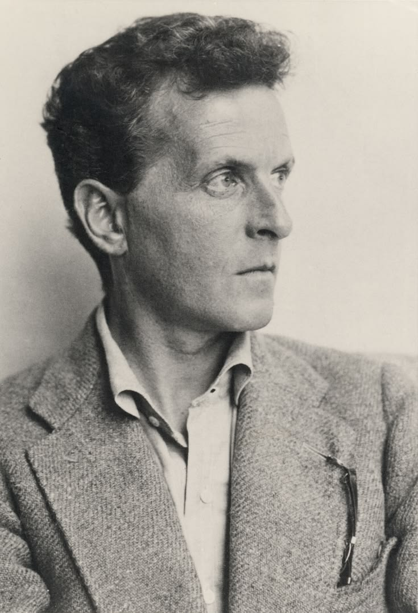

Who Was Ludwig Wittgenstein?
Ludwig Wittgenstein was an Austrian-born philosopher, born in Vienna in 1889 into one of Europe's wealthiest and most culturally prominent families, who went on to become widely regarded as one of the most important and most unusual philosophers of the twentieth century. Trained originally in engineering and aeronautics, Wittgenstein turned to philosophy through an interest in the foundations of mathematics and logic, eventually studying under Bertrand Russell at Cambridge University.
Wittgenstein is unique among major philosophers for having produced not one but two extraordinarily influential and, in key respects, mutually incompatible philosophies of language. His early masterwork, the Tractatus Logico-Philosophicus (1921), developed a picture theory of meaning according to which meaningful language works by logically picturing possible facts in the world, and famously concluded that most traditional philosophical problems arise from confusions about the logic of language rather than from genuine substantive disagreements.
After completing the Tractatus, Wittgenstein believed he had solved all the essential problems of philosophy and abandoned the discipline entirely for nearly a decade, working instead as a rural schoolteacher, a gardener's assistant, and an architect. His eventual return to philosophy at Cambridge in the late 1920s led to a profound reconsideration of his earlier views, resulting in the posthumously published Philosophical Investigations (1953), which developed his equally influential later philosophy centered on language-games, meaning as use, and the rejection of a single underlying logical structure of language.
Wittgenstein's importance lies not only in the substance of his two major philosophies but in the extraordinary methodological and stylistic originality with which he pursued philosophical questions, treating philosophy less as a system-building enterprise and more as a therapeutic activity aimed at dissolving conceptual confusions generated by the misuse of language. His work decisively shaped analytic philosophy of language, philosophy of mind, and ordinary language philosophy throughout the remainder of the twentieth century.
Wittgenstein's personal life was equally distinctive, marked by intense, often difficult relationships, deep ethical seriousness, periods of considerable personal turmoil, and a lifelong suspicion of academic philosophical culture despite his own position at its center. This combination of philosophical genius, personal intensity, and continual self-reinvention makes Wittgenstein one of the most compelling and closely studied figures in the entire history of Western philosophy.
Ludwig Wittgenstein: Quick Facts
- Full name — Ludwig Josef Johann Wittgenstein
- Born — April 26, 1889, Vienna, Austria-Hungary
- Died — April 29, 1951, Cambridge, England
- Philosophical tradition — Analytic philosophy, philosophy of language and logic
- Known for — The picture theory of meaning, the theory of language-games, the private language argument, meaning as use
- Central concept — The limits and workings of language as the key to understanding, and dissolving, most philosophical problems
- Key influences — Bertrand Russell, Gottlob Frege, Arthur Schopenhauer, Søren Kierkegaard, Leo Tolstoy
- Major works — Tractatus Logico-Philosophicus (1921), Philosophical Investigations (1953, posthumous), On Certainty (1969, posthumous)
- Career note — Believed he had solved philosophy after the Tractatus and left the field for nearly a decade before returning to Cambridge
- Historical importance — Produced two of the most influential and distinct philosophies of language of the twentieth century
Ludwig Wittgenstein's Early Life and Family

Ludwig Wittgenstein was born on April 26, 1889, in Vienna, the youngest of eight children in one of the wealthiest families in the Austro-Hungarian Empire. His father, Karl Wittgenstein, was a leading industrialist who had built a vast fortune in the iron and steel industry, and the family's household was a significant center of Viennese cultural life, hosting composers and artists including Johannes Brahms and Gustav Mahler.
Despite this privileged upbringing, the Wittgenstein family was marked by profound tragedy, including the suicides of three of Ludwig's four brothers, a pattern of loss that cast a lasting shadow over the family and that some biographers have connected to the intense, demanding expectations imposed by Karl Wittgenstein on his sons. This family history contributed to Wittgenstein's own lifelong preoccupation with ethical seriousness, personal authenticity, and, at various points in his life, his own thoughts of suicide.
Wittgenstein initially trained in engineering, studying mechanical engineering in Berlin before moving to the University of Manchester in England to pursue research in aeronautics, including work on jet propulsion and propeller design. This engineering background proved unexpectedly significant for his later philosophical development, exposing him to rigorous technical and mathematical thinking that would inform his subsequent interest in the foundations of logic and mathematics.
His interest in the philosophical foundations of mathematics led Wittgenstein to read the work of Gottlob Frege and Bertrand Russell, prompting him to travel to Cambridge in 1911 to study under Russell, who quickly recognized Wittgenstein's exceptional philosophical talent. Russell later described Wittgenstein as possessing a philosophical genius comparable to Frege's, an early and enthusiastic endorsement that helped launch Wittgenstein's rapid rise within the Cambridge philosophical community.
Wittgenstein's studies at Cambridge were interrupted by the outbreak of the First World War, during which he volunteered for service in the Austro-Hungarian army, experiencing intense combat on the Eastern and Italian fronts. It was during this period of military service, remarkably, that Wittgenstein composed much of the material that would eventually become the Tractatus Logico-Philosophicus, carrying his notebooks with him even into combat and periods of captivity as a prisoner of war.
Wittgenstein, Bertrand Russell, and Early Cambridge Years
Wittgenstein's arrival at Cambridge in 1911 marked the beginning of an intense and philosophically productive relationship with Bertrand Russell, who was then at the height of his influence following the publication of Principia Mathematica with Alfred North Whitehead. Russell quickly became convinced of Wittgenstein's exceptional philosophical ability, describing him as possessing more passion, profundity, and intellectual purity than any other student he had encountered.
Russell's own project of logical atomism, which sought to analyze complex propositions into logically independent atomic propositions corresponding to atomic facts, provided crucial background for Wittgenstein's own developing philosophical concerns regarding the logical structure of language and its relationship to reality. Wittgenstein's early notebooks and discussions with Russell reveal an intense mutual engagement with questions concerning logical form, the nature of propositions, and the foundations of logic.
Despite this close intellectual partnership, the relationship between Wittgenstein and Russell was often personally strained, reflecting significant differences in temperament between Russell's more socially engaged, publicly minded philosophical style and Wittgenstein's intensely private, ethically demanding, and often uncompromising personality. Wittgenstein frequently expressed frustration with what he considered Russell's insufficiently rigorous or insufficiently serious engagement with philosophical problems.
Russell nonetheless played an instrumental role in securing the eventual publication of the Tractatus, writing an influential introduction to the work despite Wittgenstein's own considerable reservations about whether Russell had genuinely understood its central arguments, particularly its claims concerning the limits of what can be meaningfully said in language, a disagreement that foreshadowed the increasing philosophical distance that would develop between the two thinkers in subsequent years.
This early Cambridge period, though relatively brief, proved decisive for Wittgenstein's philosophical formation, providing him with the technical logical training and the engaged philosophical community within which his own strikingly original ideas concerning logic, language, and the limits of philosophy could be developed, tested, and eventually presented to the wider philosophical world through the publication of the Tractatus.
The Tractatus Logico-Philosophicus: Structure and Aims
The Tractatus Logico-Philosophicus, completed during and shortly after the First World War and published in 1921, is one of the most unusual and influential works in the history of philosophy, presented as a series of numbered propositions organized in a strict hierarchical structure, proceeding from Wittgenstein's most fundamental claims about the nature of reality and language to increasingly detailed elaborations and consequences.
The work opens with the famous declaration that "the world is everything that is the case," establishing Wittgenstein's fundamental ontological claim that reality consists not of things but of facts, the existence or non-existence of states of affairs composed of simple objects standing in particular logical configurations. This ontology of facts rather than things provided the metaphysical foundation for Wittgenstein's subsequent analysis of how language manages to represent, or picture, this factual reality.
Wittgenstein's central aim in the Tractatus was to establish the precise logical conditions under which language can meaningfully represent reality, and correspondingly, to identify the limits beyond which language cannot meaningfully be used. This project led Wittgenstein to conclude that most traditional philosophical questions concerning ethics, aesthetics, religion, and metaphysics lie beyond these limits, not because they are unimportant, but because they cannot be meaningfully expressed in the kind of factual, picturing language whose logic the Tractatus analyzes.
This conclusion led Wittgenstein to his famous closing remark that "whereof one cannot speak, thereof one must be silent," encapsulating his view that philosophy's proper task is not to produce a body of substantive doctrines but to clarify the logic of language sufficiently to reveal which questions can be meaningfully asked and answered and which must be set aside as strictly nonsensical, however important their subject matter might otherwise seem.
Remarkably, Wittgenstein also suggested that the propositions of the Tractatus itself were ultimately nonsensical by its own criteria, comparing them to a ladder that must be thrown away after one has climbed up through it to a correct logical view of the world. This paradoxical self-characterization has generated extensive scholarly debate concerning how the work's own philosophical claims should be properly understood, given its apparent self-undermining conclusion.
The Picture Theory of Meaning
Central to the Tractatus is Wittgenstein's picture theory of meaning, according to which meaningful propositions function like pictures, representing possible states of affairs by sharing a common logical structure, or "form," with the facts they depict. Just as a physical picture, such as a map or a diagram, represents a spatial arrangement by sharing its underlying spatial structure, Wittgenstein argued that meaningful propositions represent logical possibilities by sharing their underlying logical structure.
According to this theory, a proposition's elements correspond to objects in the possible state of affairs it depicts, and the way these elements are combined within the proposition mirrors the way the corresponding objects would be combined if the depicted state of affairs actually obtained. This shared logical structure, which Wittgenstein calls the "logical form" common to both proposition and fact, is what makes it possible for a proposition to meaningfully represent, whether truly or falsely, a particular possible arrangement of the world.
A crucial implication of the picture theory is that meaningful propositions must possess determinate sense, clearly depicting one specific possible state of affairs rather than remaining vague or ambiguous, since a picture that failed to specify a determinate arrangement would fail to genuinely picture anything at all. This requirement for determinate sense reflects Wittgenstein's broader concern with achieving maximum logical precision and clarity in the analysis of meaningful language.
The picture theory also entails Wittgenstein's famous claim that the logical form shared between proposition and fact cannot itself be stated within language but can only be shown, a distinction between saying and showing that plays a crucial role throughout the Tractatus. Attempts to state logical form directly, Wittgenstein argued, inevitably produce nonsensical pseudo-propositions, since any attempt to describe the logical structure that makes representation possible would itself have to stand outside, and therefore violate, the very logical framework it attempts to describe.
This picture theory provided Wittgenstein with a powerful and influential explanation of how language manages to represent reality, while simultaneously generating the theory's most significant and controversial consequence: since ethical, aesthetic, religious, and metaphysical claims do not describe possible factual states of affairs in the relevant sense, the picture theory implies that such claims, however meaningful they might feel to those who make them, cannot be genuinely meaningful propositions in Wittgenstein's technical logical sense.
Logical Atomism and the Limits of Language
The Tractatus develops a version of logical atomism, closely related to but distinctive from Russell's own version of the same doctrine, according to which all meaningful complex propositions can ultimately be analyzed into logically independent elementary propositions, which in turn picture equally independent "atomic facts" or states of affairs composed of simple, unanalyzable objects. This atomistic picture of both language and reality provided the metaphysical backbone for Wittgenstein's broader logical and semantic theory.
Wittgenstein argued that all logically complex propositions, including those involving logical connectives such as "and," "or," and "not," are ultimately truth-functions of these elementary propositions, meaning that their truth value is entirely determined by the truth values of the elementary propositions from which they are composed, following the precise logical rules subsequently formalized in the truth-table method Wittgenstein himself is credited with developing.
This analysis led Wittgenstein to his influential characterization of logical propositions, such as tautologies of formal logic, as fundamentally different from ordinary factual propositions: whereas ordinary propositions picture contingent possible facts and can therefore be either true or false, logical tautologies are true under all possible circumstances precisely because they say nothing at all about how the world actually is, revealing only the underlying logical structure of language itself.
Building on this framework, Wittgenstein concluded that the proper domain of meaningful, sayable language is strictly limited to propositions describing contingent factual states of affairs within what he termed the "natural sciences" in a broad sense. This conclusion directly generated Wittgenstein's famous restriction of philosophy's proper task to the logical clarification of thoughts rather than the production of substantive metaphysical, ethical, or religious doctrines, which the picture theory implies necessarily fall outside the limits of meaningful, factual language.
Importantly, Wittgenstein did not regard this restriction as a dismissal of the significance of ethics, aesthetics, or religious experience; rather, he suggested that these domains concern what is most important in human life precisely because they cannot be captured within the limited domain of factual, picturing language, a suggestion reflected in his cryptic remark that "there are, indeed, things that cannot be put into words," which show themselves rather than being sayable within meaningful propositional language.
Wittgenstein's Years Away from Philosophy
Believing that the Tractatus had definitively solved the essential problems of philosophy by clarifying the logical limits of meaningful language, Wittgenstein abandoned academic philosophy almost entirely following the book's completion, giving away the substantial fortune he had inherited from his father to his siblings and pursuing a series of strikingly different vocations during the 1920s.
Wittgenstein spent several years working as an elementary school teacher in remote rural villages in Austria, a period marked by considerable personal difficulty, including significant conflict with local communities over his demanding and at times physically harsh teaching methods, culminating in an incident involving a student that led to Wittgenstein's departure from teaching altogether and a formal investigation into his conduct.
Following his departure from teaching, Wittgenstein worked briefly as a gardener's assistant at a monastery near Vienna before undertaking a significant architectural project, designing and overseeing the construction of a strikingly austere and precisely detailed house in Vienna for his sister Margaret Stonborough, a project that reflected Wittgenstein's characteristic perfectionism and his deep concern with precision, proportion, and the removal of unnecessary ornamentation.
Throughout this period away from academic philosophy, Wittgenstein maintained connections with Cambridge and with members of the Vienna Circle of logical positivists, who had become deeply influenced by the Tractatus and sought to engage Wittgenstein in discussion of its implications for their own developing philosophy of logical empiricism, discussions that gradually drew Wittgenstein back toward active philosophical engagement despite his earlier conviction that philosophy's essential problems had already been resolved.
These conversations with figures including Moritz Schlick and Friedrich Waismann, though often marked by significant philosophical disagreement, particularly regarding the Vienna Circle's verificationist interpretation of meaning, played a significant role in reawakening Wittgenstein's philosophical interests and in eventually prompting his return to full-time philosophical work at Cambridge University at the end of the decade.
Wittgenstein's Return to Cambridge and Changing Views
Wittgenstein returned to Cambridge University in 1929, initially to complete a doctorate using the already published Tractatus as his dissertation, examined by Russell and G. E. Moore, before being appointed to a series of increasingly senior academic positions, eventually succeeding Moore as professor of philosophy in 1939. This return marked the beginning of what scholars term Wittgenstein's "later philosophy," a period of sustained reconsideration of many of the Tractatus's central assumptions.
Wittgenstein's changing philosophical views developed gradually through the 1930s, documented extensively in dictated notes to students, including the so-called "Blue Book" and "Brown Book," as well as in his characteristically unconventional lecturing style, which involved thinking through philosophical problems aloud in real time rather than delivering prepared, systematic presentations, a method that profoundly influenced a generation of Cambridge philosophy students.
A crucial catalyst for Wittgenstein's changing views was his encounter with the Italian economist Piero Sraffa, whose skeptical challenges to the picture theory, including a famous gesture in which Sraffa brushed his fingertips under his chin in a characteristically Neapolitan gesture and asked what logical form this gesture shared with whatever it expressed, are widely credited with helping to dislodge Wittgenstein's earlier conviction that meaningful language must share a common logical form with the facts it represents.
Wittgenstein increasingly came to believe that the Tractatus's search for a single, universal logical structure underlying all meaningful language represented a fundamental philosophical mistake, leading him to develop instead an approach emphasizing the genuine diversity and heterogeneity of the ways language actually functions across different contexts and activities, a shift that would culminate in the philosophy presented in his later masterwork, the Philosophical Investigations.
This period of reconsideration was interrupted by service during the Second World War, during which Wittgenstein worked as a hospital porter and later in a medical research laboratory, before returning fully to Cambridge philosophical life and continuing to develop and refine the distinctive later philosophy that would eventually be compiled and published, following his death, as the Philosophical Investigations.
The Philosophical Investigations: A New Method
The Philosophical Investigations, compiled from manuscripts Wittgenstein worked on throughout the final decades of his life and published posthumously in 1953, presents a philosophical method and style radically different from the rigid, numbered propositions of the Tractatus. Instead of a strict logical hierarchy, the Investigations consists of numbered but loosely connected remarks, observations, and imagined dialogues, deliberately resisting systematic presentation in favor of an exploratory, investigative style.
This stylistic shift reflected Wittgenstein's changed conception of philosophy's proper method and aim. Rather than seeking to establish a single, comprehensive logical theory of meaning, as the Tractatus had attempted, the Investigations approaches philosophical problems therapeutically, aiming to dissolve conceptual confusions by carefully examining how language actually functions in diverse, concrete contexts, rather than by constructing an idealized theoretical model of how language must function.
Wittgenstein explicitly criticizes his own earlier Tractatus throughout the Investigations, targeting in particular the picture theory's assumption that meaningful language must share a single logical structure with reality, and the associated assumption that ordinary language suffers from a kind of logical imperfection requiring philosophical analysis to reveal its true underlying logical form, a project the later Wittgenstein came to regard as fundamentally misguided.
In place of this earlier picture, the Investigations develops an alternative view emphasizing the practical, contextual, and rule-governed character of meaningful language use, famously summarized in Wittgenstein's dictum that "the meaning of a word is its use in the language," a formulation that would prove enormously influential for subsequent ordinary language philosophy and philosophy of language more broadly throughout the second half of the twentieth century.
The Investigations also introduced a range of now-famous philosophical concepts and thought experiments, including language-games, family resemblance, the private language argument, and the rule-following considerations, each of which contributed to Wittgenstein's broader project of showing how traditional philosophical problems often arise from misunderstanding the actual, diverse workings of ordinary language rather than from genuine substantive philosophical puzzles requiring theoretical resolution.
What Are Language-Games?
Wittgenstein's concept of the language-game (Sprachspiel) is among the most influential ideas of the Philosophical Investigations, referring to the diverse, rule-governed activities within which particular uses of language acquire their meaning. Wittgenstein deliberately chose the term "game" to emphasize that language, like games such as chess or football, consists of practices governed by conventional rules that give particular moves, or utterances, their point and significance within the activity as a whole.
Wittgenstein illustrates the concept through numerous simple examples, such as a builder calling out "slab" to a helper who then brings a slab, illustrating how words can function meaningfully within a practical activity without requiring the kind of complex logical picturing relationship the Tractatus had assumed was necessary for meaningful language. Different language-games, Wittgenstein observes, serve radically different purposes, including giving orders, describing objects, telling jokes, praying, and making requests, each with its own distinctive rules and criteria of correctness.
A crucial implication of this concept is that there is no single, universal logical structure or essence shared by all instances of meaningful language use, directly contradicting the Tractatus's assumption that all meaningful propositions must share a common picturing logical form. Instead, Wittgenstein argues that language consists of an indefinitely large and continually expanding family of diverse language-games, each embedded within particular human practices and forms of life.
This plurality of language-games also implies that philosophical confusion frequently arises when philosophers illegitimately extract words or expressions from their proper practical context and attempt to analyze them in isolation, treating language as though it possessed a single, context-independent logical structure awaiting theoretical discovery. Wittgenstein's therapy for such confusion involves carefully returning philosophically puzzling expressions to their ordinary practical contexts of use, where their meaning typically becomes unproblematic.
The concept of language-games proved enormously influential for subsequent philosophy of language, ordinary language philosophy, and philosophy of social science, providing an alternative to both traditional logical analysis and naive referential theories of meaning by emphasizing the fundamentally practical, rule-governed, and socially embedded character of meaningful linguistic activity across its enormous diversity of forms and purposes.
Family Resemblance and the Concept of "Game"
Wittgenstein develops his influential concept of family resemblance (Familienähnlichkeit) through a sustained examination of the concept "game" itself, asking what single common feature might be shared by all the activities we call games, including board games, card games, ball games, and athletic games. Wittgenstein argues that careful examination reveals no single essential feature common to all games, but rather a complex network of overlapping similarities and differences.
This observation leads Wittgenstein to propose that many important concepts, rather than being defined by a single set of necessary and sufficient conditions as traditional philosophical analysis typically assumed, are instead unified by family resemblance, a network of overlapping similarities comparable to the way members of a family might resemble one another in various respects, such as build, features, or temperament, without sharing any single feature common to every family member.
The concept of family resemblance carries significant implications for traditional philosophical methodology, particularly the longstanding assumption, traceable to Plato and central to much subsequent philosophy, that philosophical analysis should aim to identify the essential, defining features shared by all instances falling under a given concept. Wittgenstein's analysis suggests that this search for essences may frequently be misguided, imposing an artificial uniformity on concepts that are better understood through their genuine, irregular pattern of overlapping similarities.
This insight extends beyond the specific example of "game" to numerous other philosophically significant concepts that Wittgenstein and subsequent philosophers have analyzed in similar terms, including concepts such as "language" itself, "understanding," and various ethical and aesthetic concepts, suggesting a broadly anti-essentialist methodological orientation that has significantly influenced subsequent philosophy across multiple domains beyond philosophy of language narrowly construed.
Family resemblance thus represents one of Wittgenstein's most significant methodological contributions, offering an alternative to traditional essentialist analysis that has proven applicable well beyond its original context, informing subsequent philosophical discussions in aesthetics, philosophy of science, and conceptual analysis more broadly throughout the decades following the publication of the Philosophical Investigations.
The Private Language Argument
Among the most philosophically significant and extensively debated sections of the Philosophical Investigations is Wittgenstein's private language argument, which contends that a genuinely private language, referring exclusively to purely private, inner sensations and understandable in principle only to the single individual experiencing them, is not merely practically difficult but logically impossible, a conclusion with far-reaching implications for philosophy of mind and epistemology.
Wittgenstein develops this argument partly through his famous example of a private diarist who attempts to introduce a private sign, "S," to refer to a particular private sensation whenever it recurs, associating the sign with the sensation through purely private ostensive definition, without any possible external, publicly observable criterion for correctly applying the sign on subsequent occasions.
Wittgenstein argues that in this scenario, the diarist possesses no genuine way of distinguishing between correctly remembering and merely seeming to remember that the current sensation is indeed the same as the one originally associated with the sign "S," since there exists no independent, publicly checkable standard of correctness against which the diarist's private memory impressions could be verified or corrected, undermining the very possibility of genuine rule-following implicit in meaningful language use.
This argument connects to Wittgenstein's broader rule-following considerations, which explore the puzzling question of what it means to correctly follow a rule, including a semantic rule governing word meaning, arguing that rule-following essentially requires the possibility of a distinction between correct and incorrect applications that can only be secured through embedding within a shared, publicly checkable social practice rather than through purely private, individual mental acts of interpretation or association.
The private language argument carries profound implications for philosophy of mind, suggesting that even our understanding of our own inner sensations is fundamentally dependent upon shared public language and social practices rather than constituting a purely private, incorrigible domain of self-knowledge, a conclusion that has generated extensive subsequent philosophical debate concerning its precise scope, validity, and implications for theories of mind, meaning, and self-knowledge.
Meaning as Use and the Rejection of Mentalism
Central to Wittgenstein's later philosophy is his famous formulation that "the meaning of a word is its use in the language," a principle that decisively rejects earlier theories, including his own in the Tractatus, that sought to explain meaning through a word's reference to an object, or through an associated private mental image or idea supposedly accompanying its use. This shift redirects philosophical attention from hypothesized internal mental processes toward the observable, public practices within which words are actually employed.
Wittgenstein was particularly critical of what he termed mentalism, the assumption that understanding a word or sentence essentially consists in some private, internal mental process, such as forming a mental image or grasping an abstract meaning, occurring within an individual's mind. Through numerous examples and thought experiments, Wittgenstein sought to show that such internal mental accompaniments, even when they occur, are neither necessary nor sufficient for genuinely understanding or correctly using a word.
Instead, Wittgenstein argued that understanding a word is better conceived as a practical ability, a mastery of the technique of using that word correctly within relevant language-games, comparable to knowing how to play a particular move in chess rather than possessing some private inner experience that somehow guarantees correct future application. This practical, ability-based conception of understanding significantly influenced subsequent philosophy of mind and philosophy of language.
Wittgenstein's meaning-as-use principle also carries important methodological implications, suggesting that philosophical confusion frequently arises from treating words as though they must possess a single, fixed meaning independent of their diverse practical contexts of use, rather than recognizing that a word's meaning may legitimately vary, sometimes considerably, across different language-games and contexts without thereby indicating ambiguity, error, or philosophical confusion requiring theoretical resolution.
This emphasis on use over reference or mental representation proved foundational for the subsequent development of ordinary language philosophy, particularly at Oxford through philosophers including J. L. Austin and Gilbert Ryle, who extended Wittgenstein's insights into detailed analyses of how ordinary language actually functions across a wide range of philosophically significant contexts and expressions.
Forms of Life and the Limits of Justification
Wittgenstein's later philosophy introduces the concept of forms of life (Lebensformen) to describe the broader shared human practices, customs, and ways of living within which particular language-games are embedded and against which they ultimately become intelligible. Language, for Wittgenstein, cannot be fully understood in isolation from these broader forms of life, since the rules and criteria of correctness governing particular language-games are ultimately grounded in shared human practices rather than in purely abstract logical relationships.
This concept reflects Wittgenstein's broader conviction that philosophical explanation and justification must eventually come to an end somewhere, resting ultimately on shared human practices and agreement in judgments and reactions rather than on further, more fundamental theoretical justification extending indefinitely. As Wittgenstein famously observed, if he has exhausted the justifications for a practice, he has reached bedrock, and his spade is turned, indicating the limits beyond which further philosophical justification becomes impossible or unnecessary.
The notion of forms of life also carries significant implications for questions of relativism and the possibility of radically different, mutually unintelligible ways of understanding the world, questions that have generated extensive subsequent philosophical discussion concerning whether and how Wittgenstein's emphasis on shared forms of life might allow for, or rule out, the possibility of fundamentally different, equally legitimate human forms of life and understanding.
Wittgenstein's final work, the posthumously published On Certainty (1969), extended these considerations concerning forms of life and the limits of justification into a detailed examination of epistemological questions concerning certainty and doubt, arguing that certain basic propositions function as a kind of unquestioned "hinge" around which our ordinary practices of doubting and justifying other claims can meaningfully take place, themselves standing outside the ordinary process of empirical verification and doubt.
These later reflections on forms of life and certainty represent some of Wittgenstein's final and most philosophically rich contributions, extending his characteristic emphasis on shared human practice and the limits of philosophical justification into increasingly subtle epistemological territory, work that continued to develop and mature until very shortly before his death.
Wittgenstein and the Vienna Circle
The Vienna Circle, a group of philosophers and scientists centered around Moritz Schlick at the University of Vienna during the 1920s and 1930s, developed the influential philosophical movement known as logical positivism, drawing significant inspiration from Wittgenstein's Tractatus, particularly its emphasis on logical analysis and its restriction of meaningful language to propositions capable of empirical verification.
Members of the Vienna Circle, including Schlick, Rudolf Carnap, and Friedrich Waismann, developed the influential verification principle, according to which a proposition is meaningful only if it can, at least in principle, be empirically verified, a principle they took, not entirely accurately, to be a direct development of Wittgenstein's own picture theory of meaning and its restriction of meaningful language to factual, picturing propositions.
Wittgenstein maintained a complex and often ambivalent relationship with the Vienna Circle, engaging in extensive private discussions with Schlick and Waismann during the late 1920s while consistently resisting closer public association with the movement and expressing significant reservations about their interpretation and application of his own philosophical ideas, particularly their tendency toward a scientistic worldview Wittgenstein found uncongenial to his own ethical and spiritual seriousness.
Despite these reservations, Wittgenstein's influence on logical positivism proved historically significant, helping to establish logical analysis of language as a central philosophical method during the interwar period and contributing to the movement's broader project of demarcating meaningful scientific and factual discourse from what its members considered meaningless metaphysical speculation, even as Wittgenstein's own subsequent philosophical development moved in directions the Vienna Circle would likely have found equally uncongenial.
The eventual dispersal of the Vienna Circle following the rise of Nazism and the annexation of Austria, which forced many of its members, several of whom were Jewish or politically vulnerable, into exile, marked the effective end of logical positivism as an organized philosophical movement, though its influence, partly transmitted through Wittgenstein's own indirect inspiration, continued to shape analytic philosophy of language and science for decades afterward.
Wittgenstein's Influence on Ordinary Language Philosophy
Wittgenstein's later philosophy, particularly its emphasis on meaning as use and the diverse functions of ordinary language, exercised decisive influence on the development of ordinary language philosophy, a movement centered primarily at Oxford University during the 1950s that sought to resolve philosophical problems through careful attention to how key terms actually function within ordinary, everyday discourse rather than through the construction of formal logical systems.
J. L. Austin, one of the movement's most significant figures, developed influential analyses of speech acts, distinguishing between different types of linguistic performances and their conditions of success or failure, work that extended Wittgenstein's insight that language performs numerous different functions beyond simply describing facts, a central theme already present in Wittgenstein's concept of language-games.
Gilbert Ryle, another significant figure associated with ordinary language philosophy, applied similar methods to philosophy of mind in his influential work The Concept of Mind, criticizing what he termed the "ghost in the machine" view of mental phenomena as private inner events, a criticism closely paralleling Wittgenstein's own critique of mentalism and his emphasis on the publicly observable, practice-embedded character of mental concepts.
Wittgenstein's students and followers at Cambridge, including Elizabeth Anscombe, Norman Malcolm, and Rush Rhees, also played crucial roles in preserving, editing, and publishing Wittgenstein's extensive unpublished manuscripts following his death, ensuring that his later philosophical development, only partially represented within his own lifetime publications, became fully available for subsequent scholarly study and philosophical influence.
This combination of direct philosophical influence and dedicated editorial preservation of Wittgenstein's later manuscripts ensured that his distinctive method of careful attention to ordinary language use continued to shape analytic philosophy throughout the second half of the twentieth century, even as subsequent philosophers developed their own distinctive applications and extensions of Wittgensteinian insights across philosophy of language, philosophy of mind, and epistemology.
Wittgenstein's Personality and Personal Life
Wittgenstein was known throughout his life for an intensely demanding, often difficult personality, characterized by extreme ethical seriousness, a deep suspicion of superficiality and intellectual dishonesty, and a corresponding impatience with what he considered merely clever or insufficiently sincere philosophical discussion, qualities that made him both a magnetic and, at times, an intimidating presence within the Cambridge philosophical community.
Wittgenstein's personal relationships were similarly intense and often complicated, including significant romantic relationships with several men, most notably the Cambridge mathematics student David Pinsent, to whom the Tractatus is dedicated, and later relationships including with Francis Skinner and Ben Richards, relationships that Wittgenstein, reflecting both his own personal reticence and the social and legal constraints of his era, generally kept private.
Throughout his life, Wittgenstein displayed a persistent interest in religious and spiritual questions, despite his formal rejection of traditional religious metaphysics within the framework of the Tractatus, expressing deep admiration for religious figures and texts, including the Gospels and the writings of Søren Kierkegaard and Leo Tolstoy, and describing himself at various points as approaching philosophical and personal questions from what he considered a fundamentally religious point of view, even without conventional theological commitment.
Wittgenstein's teaching style at Cambridge was similarly distinctive and demanding, typically conducted in his own sparsely furnished rooms rather than formal lecture halls, involving intense, exploratory thinking aloud rather than prepared presentations, and requiring considerable philosophical stamina and tolerance for uncertainty from students accustomed to more conventional academic instruction, a teaching method that nonetheless produced a remarkable generation of subsequently influential philosophers.
This combination of ethical intensity, personal reticence, spiritual seriousness, and philosophical originality made Wittgenstein a uniquely compelling figure within twentieth-century intellectual life, and his personality and biography have continued to attract significant scholarly and popular interest alongside the substantive philosophical content of his published and posthumously published work.
Wittgenstein's Death and Posthumous Publications
Ludwig Wittgenstein was diagnosed with prostate cancer in 1949 and continued working intensively on philosophical manuscripts, including material that would eventually be published as On Certainty, until shortly before his death. He died on April 29, 1951, in Cambridge, reportedly telling those present at his deathbed to convey to his friends that he had had a wonderful life, a remark widely noted given the considerable personal difficulty and intensity that had characterized much of his biography.
At the time of his death, Wittgenstein had published only the Tractatus Logico-Philosophicus and a single short article during his lifetime, leaving an enormous volume of unpublished manuscripts, typescripts, and dictated notes that his literary executors, Elizabeth Anscombe, Rush Rhees, and Georg Henrik von Wright, undertook to edit and publish over subsequent decades, a project that has continued to shape scholarly understanding of Wittgenstein's full philosophical development.
The Philosophical Investigations, published in 1953, represented the first and most significant of these posthumous publications, immediately establishing itself alongside the Tractatus as one of the most important texts of twentieth-century philosophy despite, or perhaps partly because of, its unconventional, unsystematic style and its explicit rejection of many of Wittgenstein's own earlier philosophical commitments.
Subsequent posthumous publications, including On Certainty, Remarks on the Foundations of Mathematics, and numerous volumes of lecture notes and personal notebooks, have continued to expand and refine scholarly understanding of Wittgenstein's philosophical development, revealing the full complexity and continuing evolution of his thought across topics extending well beyond the philosophy of language narrowly construed, into philosophy of mathematics, psychology, and epistemology.
This extensive posthumous publication history means that Wittgenstein's full philosophical legacy continued to develop and be discovered by scholars for decades after his death, a circumstance that distinguishes his historical reception from philosophers whose complete body of work was available for scholarly assessment during their own lifetimes, and that continues to generate ongoing scholarly reassessment of the full scope and coherence of his philosophical achievement.
Early Wittgenstein vs. Later Wittgenstein
The relationship between the early Wittgenstein of the Tractatus and the later Wittgenstein of the Philosophical Investigations represents one of the most striking instances of significant self-revision in the history of philosophy, with the later work explicitly targeting and rejecting many of the earlier work's central assumptions rather than simply refining or extending them.
Where the early Wittgenstein sought a single, universal logical structure underlying all meaningful language, expressed through the picture theory of meaning, the later Wittgenstein rejected this search for logical uniformity in favor of recognizing the genuine diversity and heterogeneity of language-games, each with its own distinctive rules and criteria of meaningful use, rather than a single common logical essence.
Where the early Wittgenstein maintained a sharp, principled distinction between meaningful factual language and meaningless pseudo-propositions concerning ethics, aesthetics, and metaphysics, the later Wittgenstein's emphasis on the diversity of language-games implies a more inclusive view of meaningful language use, recognizing that religious, ethical, and other non-factual forms of discourse may possess their own legitimate criteria of meaningful use within their respective language-games and forms of life.
Despite these significant differences, scholars have identified important elements of continuity between the early and later philosophy, including Wittgenstein's consistent conception of philosophy as a fundamentally therapeutic activity aimed at dissolving conceptual confusion rather than constructing substantive philosophical theories, and his consistent concern with the relationship between language, logic, and the limits of what can be meaningfully expressed or understood.
This dramatic self-revision, unusual among major philosophers who more typically develop and refine an initial philosophical position throughout their careers, has made the relationship between early and later Wittgenstein a subject of extensive scholarly analysis, with ongoing debate concerning the precise nature and extent of the continuities and discontinuities separating these two enormously influential phases of his philosophical development.
Wittgenstein and Russell: Diverging Logical Projects
Comparing Wittgenstein and Bertrand Russell illuminates important differences within the broader tradition of analytic philosophy and logical atomism that both thinkers helped establish. While Russell's logical atomism sought to construct a comprehensive metaphysical and epistemological system grounded in logical analysis, extending across philosophy of mathematics, epistemology, and ethics, Wittgenstein's more narrowly focused project in the Tractatus concentrated specifically on establishing the precise logical limits of meaningful language.
Russell maintained a lifelong commitment to philosophy as a progressive, cumulative discipline capable of achieving genuine knowledge through careful logical analysis, applying this conviction across an extraordinarily broad range of philosophical, political, and social topics throughout his long public career. Wittgenstein, by contrast, maintained a more skeptical view of philosophy's capacity to produce positive doctrines, emphasizing instead philosophy's properly therapeutic and clarificatory function throughout both phases of his philosophical development.
The two thinkers also diverged significantly regarding the proper public role of the philosopher: Russell embraced extensive public engagement, writing prolifically for general audiences on political, social, and religious questions and receiving the Nobel Prize in Literature in 1950, while Wittgenstein maintained a much more private, austere relationship to his own philosophical work, publishing minimally during his lifetime and expressing persistent skepticism toward popular philosophical writing and public intellectual engagement.
Despite Russell's crucial early role in recognizing and championing Wittgenstein's philosophical talent, the relationship between the two thinkers grew increasingly strained over time, reflecting both philosophical disagreements, particularly regarding the proper interpretation of the Tractatus's implications, and significant differences in temperament and conception of philosophy's proper method and social role.
The comparison between Wittgenstein and Russell therefore illustrates two significantly different trajectories available within the broader analytic tradition both helped found: one oriented toward the construction of comprehensive philosophical systems through logical analysis, and another oriented toward the therapeutic dissolution of philosophical confusion through careful attention to the actual workings of language, a divergence that continues to inform debates within analytic philosophy to the present day.
Criticisms and Ongoing Debates About Wittgenstein's Philosophy
Wittgenstein's philosophy, in both its early and later forms, has faced significant criticism throughout the decades since its initial publication. Critics of the Tractatus have questioned whether its picture theory of meaning can adequately account for the full range of meaningful language use, including logical, mathematical, and evaluative language that does not straightforwardly picture contingent factual states of affairs in the manner the theory requires.
Critics of the later philosophy have similarly raised significant challenges, including questions about whether Wittgenstein's rejection of theoretical philosophical explanation in favor of purely descriptive attention to ordinary language use might itself constitute an implicit, if unacknowledged, philosophical theory, and whether his emphasis on shared forms of life adequately addresses the possibility of genuine, irresolvable disagreement or confusion even within apparently shared language games.
The private language argument, though widely influential, has also generated extensive critical debate, with some philosophers, including Saul Kripke in his influential interpretation of the rule-following considerations, offering readings that some scholars consider to depart significantly from Wittgenstein's own intentions, generating further scholarly disagreement concerning the argument's precise scope, validity, and philosophical implications for questions of meaning and mental content.
Some critics have also questioned the coherence of Wittgenstein's overall philosophical method, arguing that his refusal to offer systematic theoretical arguments in favor of exploratory, therapeutic dialogue makes it difficult to definitively establish or refute his central claims through the kind of rigorous argumentative engagement more typical of analytic philosophical discourse, a methodological tension that continues to generate discussion concerning how Wittgensteinian philosophy should properly be evaluated and applied.
These ongoing debates illustrate the continued vitality and contested character of Wittgenstein's philosophical legacy, reflecting both the genuine difficulty and depth of the questions he addressed and the distinctive, sometimes deliberately resistant character of his philosophical method, which continues to generate substantial scholarly disagreement even among philosophers broadly sympathetic to his fundamental philosophical concerns and insights.
Why Is Ludwig Wittgenstein Important?
Ludwig Wittgenstein is important because he produced two of the most influential and philosophically distinct theories of language and meaning in the entire history of Western philosophy, decisively shaping the development of analytic philosophy of language, logic, and philosophy of mind throughout the twentieth century and into the present day.
His early Tractatus provided one of the most rigorous and influential analyses of the logical structure of meaningful language, while simultaneously establishing enduring questions concerning the limits of what can be meaningfully expressed that continue to inform philosophical discussion of ethics, aesthetics, and metaphysics to the present day, regardless of whether Wittgenstein's own specific conclusions are accepted.
His later philosophy, developed in the Philosophical Investigations, provided an equally influential and arguably even more historically consequential alternative approach, emphasizing the practical, contextual, and diverse character of meaningful language use, decisively shaping subsequent ordinary language philosophy and continuing to inform contemporary philosophy of language, philosophy of mind, and epistemology through concepts including language-games, family resemblance, and the private language argument.
Wittgenstein's willingness to fundamentally revise his own earlier philosophical commitments, rather than simply refining or defending them, also represents an important and distinctive contribution to the practice of philosophy itself, illustrating a model of genuine philosophical self-criticism and development that remains relatively rare among major historical philosophers and that continues to be studied as a significant case in the history and methodology of philosophical inquiry.
His enduring importance ultimately lies in the combination of logical rigor, philosophical originality, and genuine intellectual humility reflected in his willingness to fundamentally reconsider his own most influential earlier work, together with the continuing relevance of the questions his two major philosophies raise concerning the nature, function, and limits of human language and understanding.
Ludwig Wittgenstein's Main Philosophical Ideas
Wittgenstein's philosophy can be understood through several interconnected ideas concerning meaning, logic, language-games, and the limits of expression, spanning both his early and later philosophical periods and reflecting his consistent concern with clarifying how language actually functions and where its meaningful use properly ends.
The Picture Theory of Meaning
The picture theory of meaning, developed in the Tractatus, holds that meaningful propositions represent possible states of affairs by sharing a common logical structure with the facts they depict, providing an influential early analysis of how language manages to represent reality.
The Limits of Language
Wittgenstein's early philosophy establishes strict limits of meaningful language, restricting sayable propositions to factual, picturing statements and concluding that ethical, aesthetic, and metaphysical claims, however important, lie beyond what can be meaningfully expressed in propositional language.
Language-Games
Language-games, developed in the later philosophy, describe the diverse, rule-governed activities within which words acquire meaning through use, rejecting the earlier search for a single universal logical structure shared by all meaningful language.
Meaning as Use
Wittgenstein's later principle that meaning is use redirects philosophical attention from hypothesized private mental processes toward the observable, practical activities within which words are actually and correctly employed within particular language-games.
The Private Language Argument
The private language argument contends that a language referring only to purely private sensations, understandable to just one person, is logically impossible, since meaningful rule-following requires publicly checkable criteria of correctness that a purely private language could not provide.
Ludwig Wittgenstein Explained Simply
Wittgenstein's central philosophical question can be stated simply: how does language manage to mean anything at all, and where are the limits of what it can meaningfully say? Remarkably, he offered two significantly different and influential answers to this question over the course of his career, each of which has profoundly shaped subsequent philosophy.
His early answer, presented in the Tractatus, held that meaningful propositions work like pictures, sharing a logical structure with the facts they represent, and that traditional philosophical problems concerning ethics, religion, and metaphysics arise from mistakenly trying to say things that can only be shown, or that fall outside the limits of meaningful, factual language altogether.
- Early answer — The picture theory: Meaningful propositions picture possible facts by sharing their logical structure, and most philosophical problems arise from confusions about the logic of language rather than genuine substantive disputes.
- The turning point — Doubting his own theory: Wittgenstein came to believe the search for a single universal logical structure of language was mistaken, prompted partly by challenges from economist Piero Sraffa.
- Later answer — Language-games: Words acquire meaning through their use within diverse, rule-governed practical activities, rather than through a single logical picturing relationship to the world.
- Method — Meaning as use: Understanding a word is a practical ability to use it correctly within relevant language-games, not a private mental process of grasping an abstract meaning.
- Key argument — Against private language: A language referring only to purely private sensations is impossible, because meaningful rule-following requires publicly checkable standards of correctness.
Put very simply, Wittgenstein's philosophy can be understood as two sustained and strikingly different attempts to answer "how does language work, and where does it stop working?" First by seeking a single universal logical picture, and then by carefully attending to the genuine, messy diversity of how language actually functions across countless different human practices and activities.
This is why Wittgenstein's philosophy connects several major areas of twentieth-century thought. His early picture theory explains his foundational contribution to logical analysis and logical positivism, his later language-games explain his influence on ordinary language philosophy, and his private language argument explains his continuing relevance to philosophy of mind. Together, these ideas form the structure of Wittgenstein's uniquely dual and enduringly influential philosophical legacy.
Frequently Asked Questions About Ludwig Wittgenstein
Who was Ludwig Wittgenstein?
Ludwig Wittgenstein was an Austrian-British philosopher, widely regarded as one of the most important philosophers of the twentieth century, known for producing two highly influential and strikingly different philosophies of language.
What is the Tractatus Logico-Philosophicus about?
The Tractatus Logico-Philosophicus is Wittgenstein's early work, published in 1921, which argues that meaningful language works by picturing possible states of affairs in the world and that most traditional philosophical problems arise from misunderstandings of the logic of language.
What is the picture theory of meaning?
The picture theory of meaning, developed in the Tractatus, holds that meaningful propositions function like pictures, representing possible states of affairs by sharing a logical structure or form with the facts they depict.
What is a language-game in Wittgenstein's later philosophy?
A language-game is Wittgenstein's term, from the Philosophical Investigations, for the diverse, rule-governed activities within which words acquire their meaning through use, emphasizing that language functions in many different ways rather than through a single universal logical structure.
What is the private language argument?
The private language argument is Wittgenstein's contention in the Philosophical Investigations that a language referring only to purely private, inner sensations, understandable to just one person, is impossible, because meaning depends on publicly checkable criteria and rule-following.
Did Wittgenstein reject his own earlier philosophy?
Yes. Wittgenstein came to view many of the Tractatus's central assumptions, particularly its picture theory of meaning and its search for a single underlying logical structure of language, as fundamentally mistaken, leading him to develop the very different approach found in the Philosophical Investigations.
Why did Wittgenstein stop doing philosophy for several years?
After completing the Tractatus, Wittgenstein believed he had solved the essential problems of philosophy and left the field for nearly a decade, working instead as a schoolteacher, a gardener's assistant, and an architect before returning to Cambridge.
What is family resemblance in Wittgenstein's philosophy?
Family resemblance is Wittgenstein's idea that many concepts, such as "game," are not defined by a single essential feature shared by every instance but by a network of overlapping similarities, comparable to resemblances among members of a family.
Related Thinkers and Philosophers of Language
Ludwig Wittgenstein belongs to a rich tradition of analytic philosophy and philosophy of language. Explore thinkers who developed related or contrasting approaches to logic, meaning, and mind.
Philosophy Branches Connected to Wittgenstein
Wittgenstein's philosophy is especially connected with philosophy of language, logic, and philosophy of mind. His investigation of meaning and understanding also raises important questions central to epistemology.
Why Ludwig Wittgenstein Still Matters
Ludwig Wittgenstein remains one of the most important figures in twentieth-century philosophy because of the extraordinary depth and originality of not one but two distinct and influential philosophies of language.
His investigation of meaning, logic, language-games, and the limits of expression created powerful and enduringly influential frameworks for thinking about how language works and where its meaningful use properly ends.
Whether studied through the rigorous logical analysis of the Tractatus or the exploratory, practice-focused method of the Philosophical Investigations, Wittgenstein's work continues to occupy a central position in discussions of language, meaning, and the proper method of philosophy itself.
Explore Great Philosophers